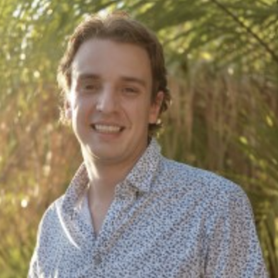
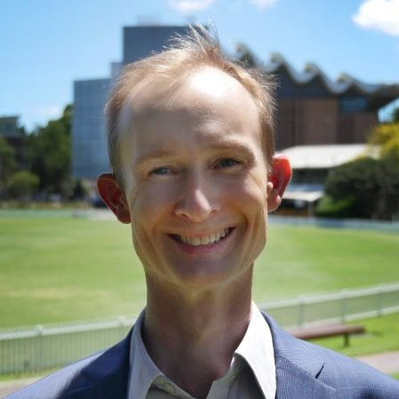
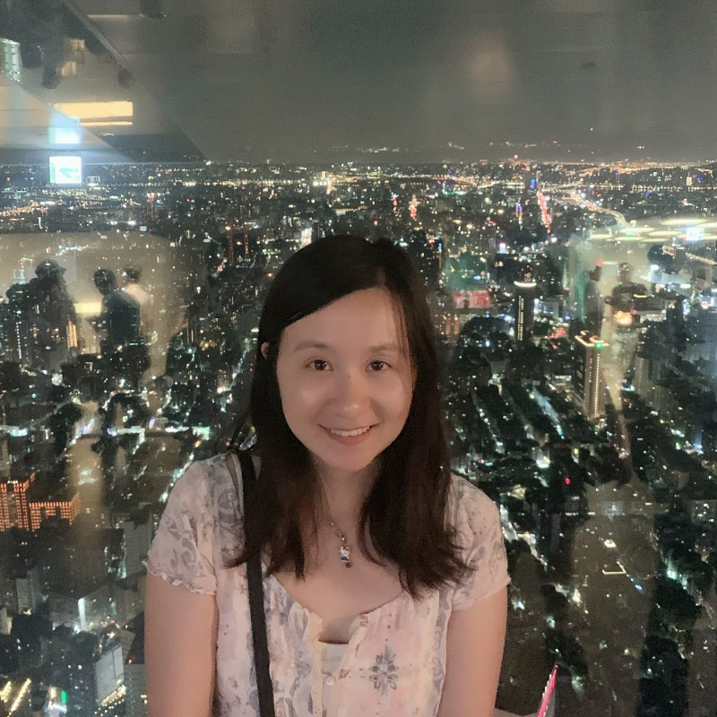
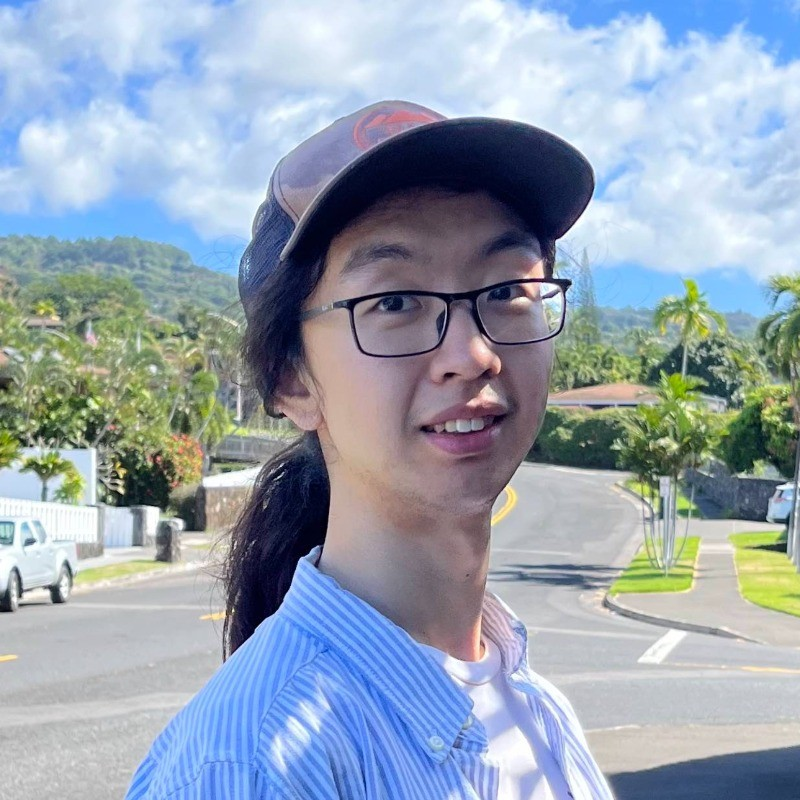
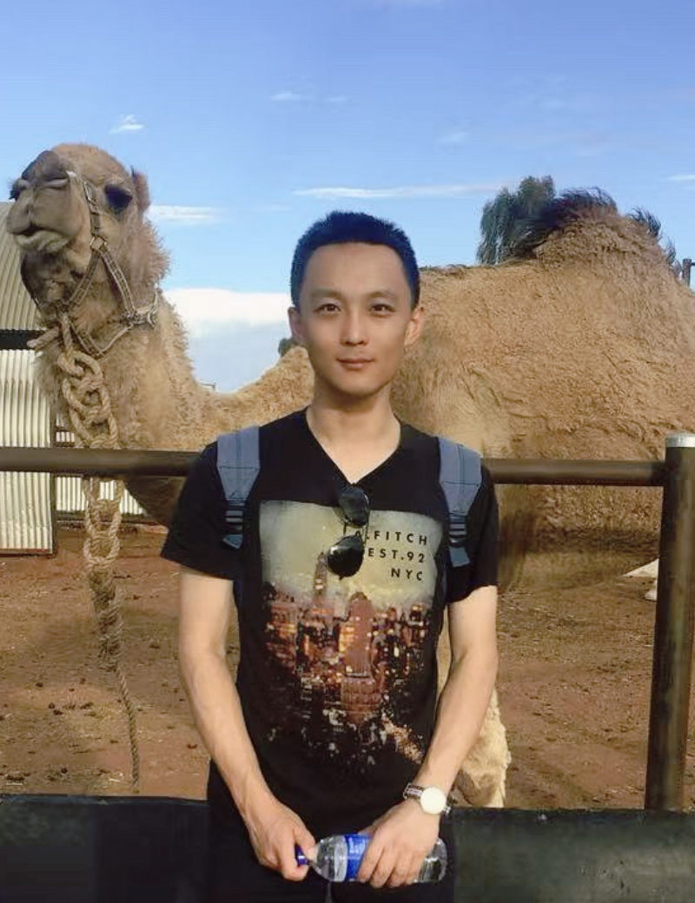
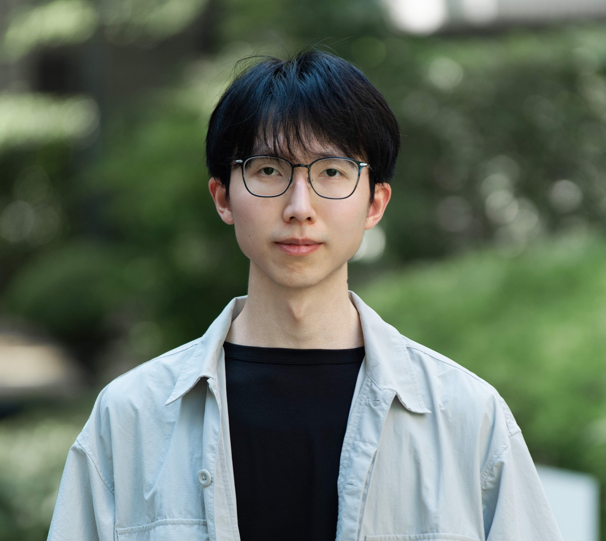
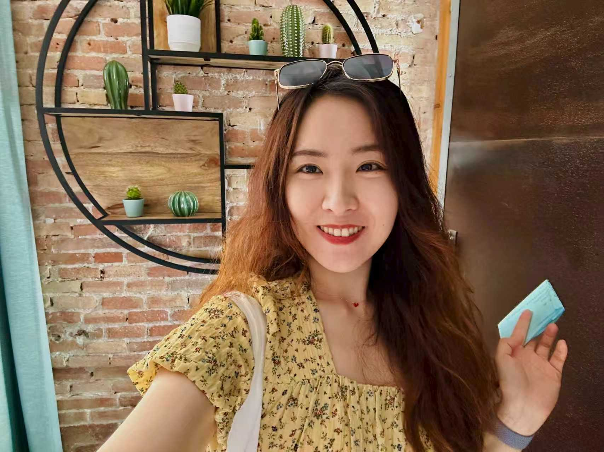
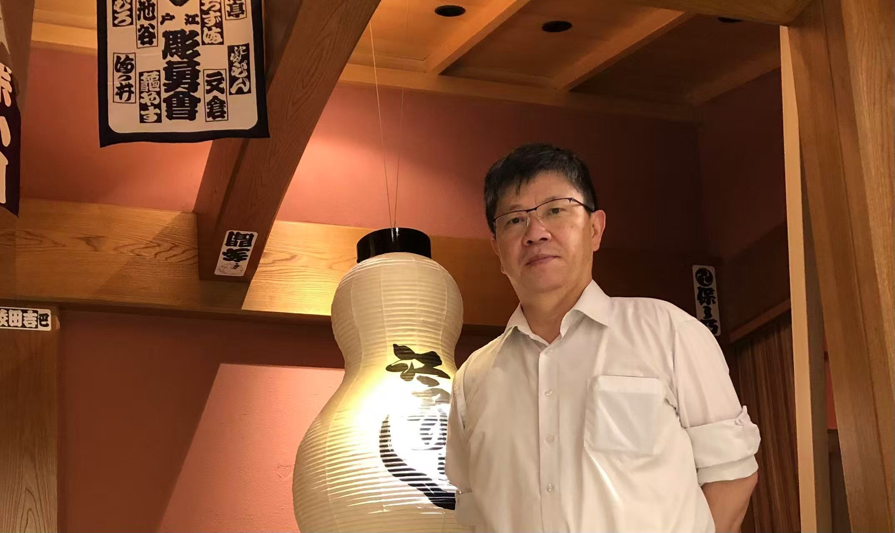

NeurIPS 2026 Workshop · Sydney, Australia
AI for Stochastic Dynamics
From Theoretical Foundations to Scientific Applications
December 11 or 12, 2026
International Convention Centre Sydney
A one-day workshop connecting stochastic analysis, dynamical systems, scientific
machine learning, generative modelling, and AI for science. We bring together
researchers developing principled methods for learning, simulating, and controlling
complex stochastic systems.
Paper submission deadlineSep 5, 2026 · AoE
Decision notificationSep 29, 2026 · AoE
Camera-ready deadlineOct 9, 2026 · AoE
Funding supportApprox. $7,000
Scan for website
Included Topics
- Stochastic analysis, applied probability, and stochastic control
- SDEs, SPDEs, and random dynamical systems
- Neural operator methods
- Diffusion, flow-based, and score-based generative models
- Probabilistic forecasting and uncertainty quantification
- Mathematical finance and stochastic modelling in climate
- Applications in scientific discovery — physics, biology, chemistry, materials science, and molecular science
- Stochastic modelling and learning for robotics and autonomous systems
Invited Speakers

Nikola Kovachki
NVIDIA

Gary Froyland
UNSW Sydney

Hao Ni
University College London
Liang Hong
Shanghai Jiao Tong University

Zongyi Li
MIT / NYU
Anima Anandkumar
Caltech
Organizers

Dai Shi
University of Cambridge

Andi Han
University of Sydney

Bingxin Zhou
Shanghai Jiao Tong University

Junbin Gao
University of Sydney

Valentin De Bortoli
Google DeepMind · ENS Paris
Luke Thompson
University of Sydney
José Miguel Hernández-Lobato
University of Cambridge